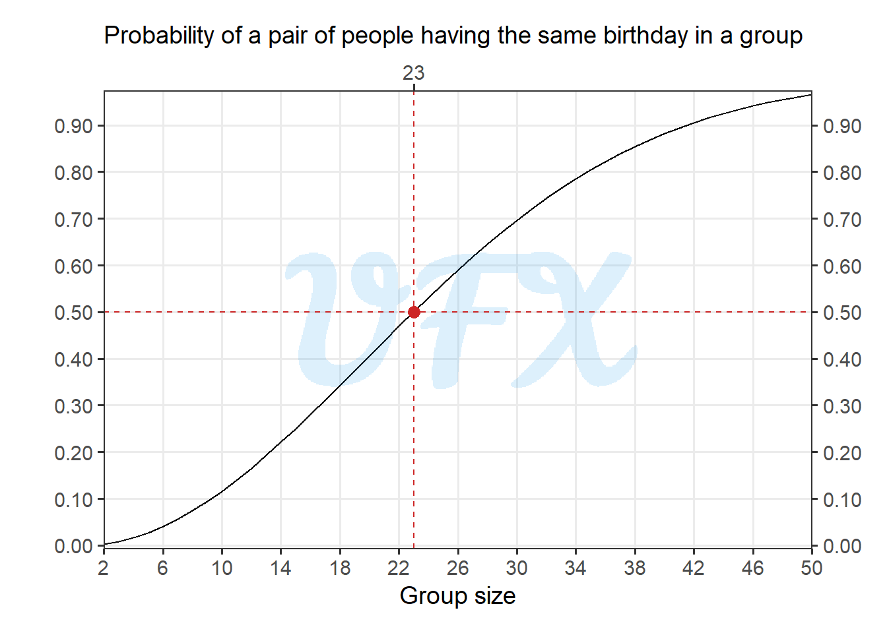

In this post of the series Intro to, I’ll give an introduction to the Birthday Paradox.
Introduction
The birthday paradox is a well-known and somewhat perplexing probability problem that concerns the likelihood of two people in a group sharing their birthday.
The results frequently surprise people due to their initial probability assumptions, which is why it is referred to as a paradox.
When birthdays collide
What is the probability that two people in a room with 23 random people share the same birthday?
Twice the wishes
First, we compute the total number of pairs using the combinations with no repeat formula, which is given by:
\[ \frac{n!}{r!(n-r)!}, \tag{1}\]
where:
\(n\) is the number of observations;
\(r!\) is the the number of observatiosn to be grouped.
So we can apply the Equation 1 to our example:
\[ \begin{align} \frac{n!}{r!(n-r)!} &= \frac{23!}{2!(23-2)!} \\ &= \frac{23!}{2!\times21!} \\ &= \frac{23\times22\times21!}{2!\times21!} \\ &= \frac{23\times22}{2} \\ &= \frac{506}{2} \\ &= 253. \\ \end{align} \tag{2}\]
As seen, we have a total of 253 pairs.
When Statistics Blow Out the Candles
Considering that a year has 365 days, given that the first person born in a single day, the other person just need to be born in any other day, so the chance of two people having different birthday is:
\[ \frac{364}{365} \approx 0.9972. \tag{3}\]
Taking this probability into account for each pair, we can compute the probability of all pairs having different birthdays:
\[ \left(\frac{364}{365}\right)^{253} \approx 0.4995. \tag{4}\] Then, we can quickly compute the probability of a pair matching their birthday by doing the complementary event of Equation 3:
\[ 1 - \left(\frac{364}{365}\right)^{253} \approx 0.5005. \tag{5}\] So, in a group of only 23 people, there is a greater than 50% chance that at least two of them have the same birthday.
The more the merrier?
But what if we want to calculate this probability for a pair in a group of more or fewer people? We can generalize the Equation 2 to
\[ \begin{align} \frac{n!}{r!(n-r)!} &= \frac{n!}{2!(n-2)!} \\ &= \frac{n\times(n-1)\times(n-2)!}{2(n-2)!} \\ &= \frac{n\times(n-1)}{2}. \\ \end{align} \tag{6}\]
Then, we use the Equation 6 in Equation 5:
\[ 1 - \left(\frac{364}{365}\right)^{\frac{n\times(n-1)}{2}}. \tag{7}\]
Finally, with Equation 7 we can see the probability behavior as the group size changes.
